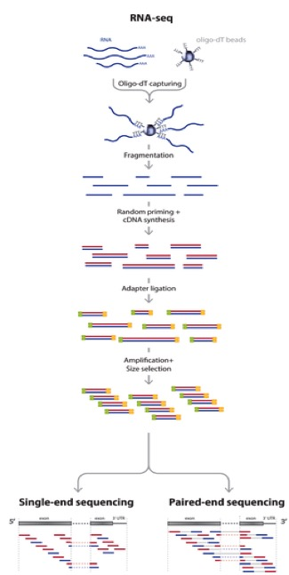

RNA-seq background information, basic Linux/Unix commands, logging into and transferring files to the HPCC, and Trimmomatic¶
Let’s start with downloading the data! This is going to take a long time, so we should start here. We will need to navigate to the FTP server. I would recommend plugging into the ethernet and make sure you have at least 10 GB of space on your computer. Initiate the download by right clicking on a sample and clicking on “Save As”. Save this file to your Desktop. Eventually we are going to rename this file after we have a refresher on basic Linux/Unix commands.
Before we dig into the data and begin trimming and aligning the reads to the genome, I think it is useful to understand what happens after you submit your RNA to the sequencing facility. This sort of knowledge can be very useful in understanding what could potentially provide bias and any number of issues to the end dataset. In this session we will cover several things including:
- RNA-seq background information
- Basic Linux/Unix commands
- Logging into and transferring files to the MSU HPCC
- Trimmomatic
RNA-seq background information¶
Before we begin, let’s watch a video about how Illumina sequencing works.
This video does a pretty good job explaining how, in generalities the sequencing process works for DNA. So for sequencing RNA, the process is as follows:
Adapted from: Zhernakova et al., PLoS Genetics 2013
So actually, we aren’t sequencing RNA at all! We are sequencing the cDNA made from the RNA. RNA-seq is a high resolution next generation sequencing (NGS) method to assess the transcriptome of an organism and compare transcriptional changes between organisms/treatments to ascertain specific pathways/genes that are moving in response. But now, let’s talk about what can add bias to the data and what we do with the data to make sure that it is reasonable to proceed to further analysis steps.
But first, let’s brainstorm a little bit. Look back at the RNA-seq workflow figure above and let’s suggest a few places where things could potentially affect the output dataset.
Here are a few thoughts...
- How could the random priming step affect downstream results?
- How could RNA secondary structures affect the library preparation process?
- Would GC content be a problem?
- Could gene length cause issues?
- What might happen if you have genes with substantially different expression levels?
- During the cluster generation on the Illumina flow cell, what might happen if you have too few clusters? Too many?
- How is it possible to sequence many samples at one time?
- What if you run out of reagents from one kit and have to open another kit to finish the library preparation process?
- Could sequencing depth be an issue?
So now that you may be questioning the validity of any RNA-seq dataset, take heart! Many very smart people have thought about these issues and come up with ways to assess technical artifacts and correct for them. So again, let’s brainstorm some potential solutions to these problems. Which problems can be addressed through better chemistries/processes vs. mathematical/computational correction?
These sorts of issues should always be considered, but recognize that RNA-seq is becoming fairly commonplace and solutions to many of these questions exist. Be critical of your data and always look at the raw data.
Multiplexing the sequencing process by pooling several samples together is not only cheaper, it can overcome what are known as batch effects. Batch effects are when you have samples that correlate with one another based on batch/time/etc. instead of biological replication. This is a very real phenomenon and can be caused by using different lots of the same kit/flow cells when preparing samples! You can correct for this, but we will get there later... For now, have a look at the diagram showing how multiplexing is achieved.

From: http://www.illumina.com/content/dam/illumina-marketing/documents/products/sequencing_introduction_microbiology.pdf
This is an example of what a batch effect looks like. Note how DMSO1 and ETZ1 group together and DMSO2 and ETZ2 group together (e.g. by batch).

We can determine what is considered a “good” base call from a “bad” one through using what is known as the Phred scoring system or Q-score.
Where Q is defined as a property that is logarithmically related to the base call error probability:
Q = -10 \log_{10} P\ |\ error\ probability = P^2
So this means:

From: http://res.illumina.com/documents/products/technotes/technote_q-scores.pdf
Illumina tends to output sequence results with a Q > 30. So let’s have a look at what some raw data looks like in terms of Q-scores before and after trimming adapters and low quality reads.

This is why we do the trimming before attempting to align the reads to the reference genome. Since we are using FastQC, let’s have a look at some sample data of what good Illumina data looks like.
So, we have come to the end of the background section. Even with all of the great tools and chemistries that have been developed to handle RNA-seq datasets, the old mantra still applies: garbage in; garbage out and with great power comes great responsibility. Take care in analyzing these sorts of data as they typically influence many downstream experiments.
Questions!
Basic Linux/Unix commands¶
To refresh your memory on some basic Linux/Unix commands, we will cover the basic commands necessary to:
1. Move through folders
2. List the contents of a folder
3. Make new folders
4. Rename files/folders
5. Delete files/folders
6. Load modules on the MSU HPCC
| Command | What it does... | Examples | |
|---|---|---|---|
| 1. | cd | Change directory/folder | > cd ~ (this changes to your home directory); > cd .. (this goes back one folder) |
| 2. | ls | List the contents of a folder | > ls |
| 3. | mkdir | Make a new directory/folder | > mkdir NewFolder (this will make a new folder called ‘NewFolder’ in your current directory) |
| 4. | mv | Rename or move a file from one name to another | > mv file1 file2 (this will rename/move file1 to file2) |
| 5. | rm | Remove a file (add the -r flag to remove a folder) | > rm file1 (remove file1); > rm -r folder1 (remove folder1) |
| 6. | module load | Load a module on the MSU HPCC | > module load Bowtie (loads the most recent version of Bowtie on the HPCC) |
Command reference sheet
Ref. sheet from: http://files.fosswire.com/2007/08/fwunixref.pdf
Let’s rename the data file you just downloaded! First, we need to initiate a naming convention for the data. Having a consistent and meaningful naming convention for your data will make it much easier for you and anyone else attempting to work with your data.
We have four conditions:
- L. reuteri grown in LB
- L. reuteri grown in the presence of indole
- L. reuteri grown in the presence of commensal E. coli conditioned medium
- L. reuteri grown in the presence of EHEC conditioned medium
For L. reuteri grown in LB, we will name our raw data files as LRWT1.fastq.gz, LRWT2.fastq.gz, etc.
For L. reuteri grown in the presence of indole, we will name our raw data files as LRindole1.fastq.gz, LRindole2.fastq.gz, etc.
For L. reuteri grown in the presence of commensal E. coli conditioned medium, we will name our raw data files as LRcomm1.fastq.gz, LRcomm2.fastq.gz, etc.
For L. reuteri grown in the presence of EHEC conditioned medium, we will name our raw data files as LRehec1.fastq.gz, LRehec2.fastq.gz, etc.
Logging into and transferring files to the MSU HPCC¶
There are multiple ways with which you can access the HPCC and transfer files to the iCER machines. This overview will be from a GUI standpoint. If you would like to get fancy and learn the Linux/Unix commands, you can access the examples on the HPCC wiki here. Any other questions you may have not detailed here (which is a lot...) on how to use the HPCC more effectively, you can check out the user manual here. There are even videos of examples on how to use various software packages.
Mac users:
1. Open the terminal by going to Finder -> Applications -> Utilities -> Terminal (might just be worth dragging it onto your dock).

2. Type: ssh YourMSUNetID@hpcc.msu.edu
3. You will then be prompted for your MSU NetID password. As you begin to type, the cursor will not show that you are entering characters, but you are. Hit the Enter/Return key at the end and you will be logged in. If this is the first time accessing the HPCC, it will send you a warning about not recognizing the RSA fingerprint. Type yes or y or whatever it needs to continue. It is okay, and necessary, to say you trust iCER to use the HPCC at MSU. If you are uncomfortable with any of this, utilize a lab or MSU computer.
4. As an example of Step 3., for me it would be > ssh john3434@hpcc.msu.edu.
5. Once you are logged in, it should look something like this:

6. Congratulations! You’ve logged in. Let’s make a new folder here in anticipation of putting the data into it. Let’s call it RNAseq. Please don’t add any spaces. If you aren’t sure how to make a new folder, scroll up a bit to the Basic Linux/Unix commands.
7. To log out, type: exit.
Windows users:
1. I am going to take the easy way out and here is a video on how to install an ssh client on Windows.
2. Congratulations! You’ve logged in. Let’s make a new folder here in anticipation of putting the data into it. Let’s call it RNAseq. Please don’t add any spaces. If you aren’t sure how to make a new folder, scroll up a bit to the Basic Linux/Unix commands.
3. To log out, type: exit.
Transferring files from your machine to the HPCC using FileZilla
1. If you haven’t already downloaded and installed FileZilla,, please do so. We want to download the FileZilla Client and not the server version.
2. Open the application and then we will need to input a few things to get connected to the MSU HPCC.
- Host: hpcc.msu.edu
- Username: Your MSU NetID
- Password: Your MSU NetID password
- Port: 22
- Click Quickconnect
3. Now that you are connected, you can move files from your computer (red circle) to the MSU HPCC (green circle) and vice versa, simply by double clicking the file. The connection closes if you exit out of the application.
Trimmomatic¶
Trimmomatic is a lightweight java application that can remove Illumina adapter sequences and low quality reads. It uses a sliding window to analyze chunks of each read, examining the quality score, minimum read length, if it corresponds to an adapter sequence, etc. Let’s have a look at the documentation to see what each option does.
To run this application, you have to run it from the command line (e.g. the terminal). If you are a Windows user, you might find it easier to use the Powershell instead of the default command line. To see if you have Powershell, search your computer for it. It recognizes most of the commands listed above whereas the normal Windows terminal does not.
1. Navigate to your desktop by typing: cd ~/Desktop and hit the Enter/Return key. This should bring you to your desktop directory.
2. Type: ls to list the contents of your Desktop directory. Check and make sure that you have your raw data file (that has since been renamed) and the Trimmomatic directory that we put there previously.
3. Navigate to the Trimmomatic directory by typing: cd Trimmomatic and then hit the Tab key. This should auto-complete the name of the directory for you. Tab auto-complete is fantastic for filling in the name of a file for you if you don’t remember the exact name. Pretty neat, huh?!
4. Now, let’s make sure you have Java installed. Type: java and hit Enter/Return. The result should be a list of commands trying to help you use Java. If you get an error, let me know.
5. At this point, let’s try and trim your data file.
6. Copy and paste this into your terminal: java -jar ~/Desktop/Trimmomatic-0.32/trimmomatic-0.32.jar SE -phred33 ~/Desktop/NameOfSample.fastq.gz ~/Desktop/NewFileNameForTrimmedSample.fastq ILLUMINACLIP:TruSeq3-SE.fa:2:30:10 LEADING:3 TRAILING:3 SLIDINGWINDOW:4:15 MINLEN:36
Note
Read through this command and change the portions that say NameOfSample.fastq.gz and NewFileNameForTrimmedSample.fastq. DO NOT ADD SPACES IN YOUR FILE NAMES
To continue our naming convention please name the NewFileNameForTrimmedSample.fastq as the following:
For L. reuteri grown in LB, we will name our raw data files as trimmedLRWT1.fastq, trimmedLRWT2.fastq, etc.
For L. reuteri grown in the presence of indole, we will name our raw data files as trimmedLRindole1.fastq, trimmedLRindole2.fastq, etc.
For L. reuteri grown in the presence of commensal E. coli conditioned medium, we will name our raw data files as trimmedLRcomm1.fastq, trimmedLRcomm2.fastq, etc.
For L. reuteri grown in the presence of EHEC conditioned medium, we will name our raw data files as trimmedLRehec1.fastq, trimmedLRehec2.fastq, etc.
Adding the word trimmed in front of the filename is important for the alignment steps done in Bowtie.
7. After you’ve added the appropriate file names into the command, hit Enter/Return. It will run for a little while and then produce some output like this:
TrimmomaticSE: Started with arguments: -phred33 /Volumes/Abramovitch Lab/RNAseq/Jake/1Gly7A_CGATGT_L008_R1_001.fastq.gz /Volumes/Abramovitch Lab/RNAseq/Jake/Trimmomatic/1Gly7Atrimmed.fq.gz ILLUMINACLIP:TruSeq3-SE.fa:2:30:10 LEADING:3 TRAILING:3 SLIDINGWINDOW:4:15 MINLEN:36 Using Long Clipping Sequence: ‘AGATCGGAAGAGCGTCGTGTAGGGAAAGAGTGTA’ Using Long Clipping Sequence: ‘AGATCGGAAGAGCACACGTCTGAACTCCAGTCAC’ ILLUMINACLIP: Using 0 prefix pairs, 2 forward/reverse sequences, 0 forward only sequences, 0 reverse only sequences Input Reads: 29294470 Surviving: 28401299 (96.95%) Dropped: 893171 (3.05%) TrimmomaticSE: Completed successfully
8. Copy this output into a text file somewhere and save it. You might want this for a report when you’re finished.
Have fun! Let me know if you have questions by placing a red sticky note on your computer.